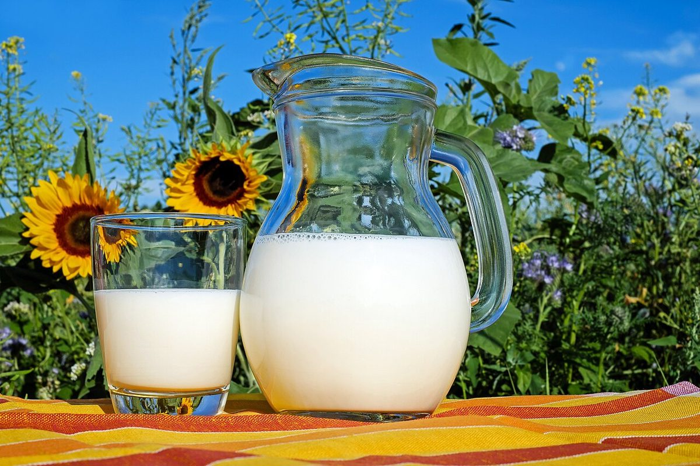
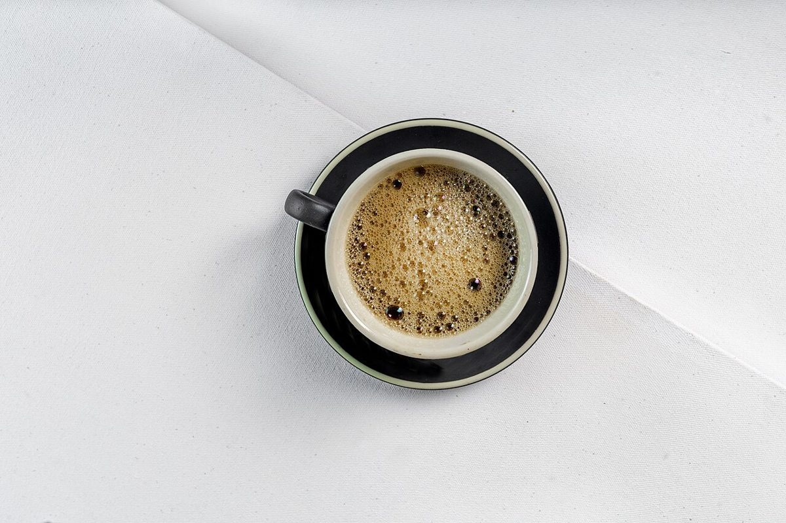
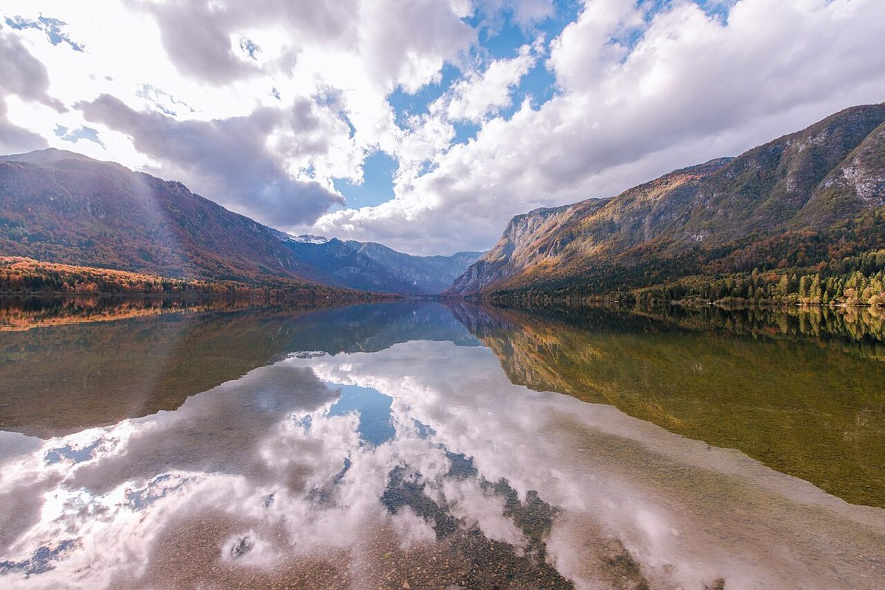

制作側の連想
サイドテーブルの部位を、配置図にしてみる
このサイトは、ソファやベッドの脇に置く小さな台・サイドテーブルを図にしたつもりで作りました。六つの部位に番号をふり、上の図と並べています。制作側の連想で、お店の理念・由来とは無関係です。実際の製品の仕様を示すものではありません。
凡例
六つの部位
- 1天板いちばん上の、物を置く平らな板です。
- 2縁(幕板)天板の下をぐるりと囲んで、脚をつなぐ板。
- 3脚天板をささえる、細くすぼまった柱の部分。
- 4下棚脚のあいだに渡した、低い位置の棚板です。
- 5補強材脚どうしを斜めにつないで、ぐらつきを抑える部材。
- 6アジャスター脚の先についた、高さを細かく合わせる足です。
写真(イメージ)
写真(イメージ)






写真はイメージです。お店のものではありません。
ご案内
お店のこと(確認できたものだけ)
| 所在地 | 〒024-0061 岩手県北上市大通り１丁目３−２６ |
|---|---|
| 電話 | 準備中 |
| 営業時間 | 準備中 |
| 定休日 | 準備中 |
| ご予約 | 準備中 |
| 駐車場 | 準備中 |
| SNS | Instagram @taimeikan |